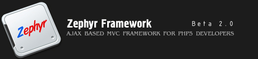

|
|
|---|---|
<<-executing javascript block returned in response text->>by default, if an action returns some javascript block in response text, it will not be executed. if you want to execute script which is a part of your response text then you need to tell it to zephyr explicitely. for this, you need to invoke action using the load_action_smartly with an additional parameter. lets take a look at the following example load_action_smartly("my_action","parameters_to_action","div_object_to_update",true) the optional fourth parameter indicates whether embedded javascript should be executed or not. here is a sample action which returns embedded javascript This is a sample view <<-cron action->>cron actions are those action which executes at a regular interval. these actions are extremely usefull if you want to update a portion of your page automatically after a certain time. in zephyr, you can easily create such cron actions. to invoke an action as cron action use use run_cron_function() function, take a look at the following example. now we wiull set a cron action which invokes this javascript function (and that means - our server side action) after regular intervals. run_cron_function(myaction, interval_in_milliseconds)) <<how to extend core zephyr classes>>Zephyr has a feature rich data access object class by which you can perform different data operations, optionally with help of a data domain model. To call MySQL aggregate functions like “avg”, “min”, “max” and so forth, you can access it like this <? This process is easy enough and gives you the full control. But zephyr's main goal is to provide an easy convenient way to perform tasks. So how about if we extend our DAO class so that we can call these aggregator functions in an easy way <? Save this class as “extendedDAO.class.php” in “php” folder under your package directory. To use this class you must load it using default PHP file loader feature for your package. In your package definition, add the following line. <php>extendedDAO.class</php> Well, we are done. Now we can call any MySQL aggregator function with the help of it. For example lets have a look at following example. <php>ex<? This example is much easier and user friendly than the previous one. By the way, this is just an example how you can extend core Zephyr classes for better functionality. From Zephyr preview beta 1.00, DAO calss has this aggregator() function builtin. <<-use package initializer->>package initializers are special class which invoked only one time while initializing the package. you can use this package for initializing session for authentication or other preparatory tasks which you need to perform only once. package initializer must be named as "initializer.class.php" and placed inside "helper" folder. lets take a look at sample package initializer.
<<-calling another action from an action->>in zephyr actions you can easily invoke another action using load_action() function. lets take a look at the following example. you can pass arbitrary number of arguments to these functions. you can accept their return values. you must pass these parameters in a key value array <? if you set third parameter to true, after executing this action, it will return the value to your calling procedure. |
|